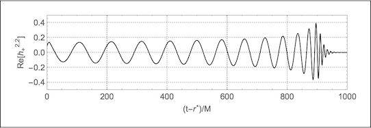

Gallery: Binary black hole GW150914
On February 11, 2016, the LIGO collaboration announced that they had achieved the first ever direct detection of gravitational waves. The gravitational waves – which were detected by both LIGO detectors on September 14, 2015 at 09:51 UTC – were generated over a billion years ago by the merger of a binary black hole system. The announcement came along with the simultaneous publication of a peer-reviewed paper [Phys. Rev. Lett. 116, 061102]; several other papers giving technical details; and a full release of the data from the detection, which has been given the name GW150914.
The LIGO analysis found that the merger consisted of a 36 + 29 solar mass binary black hole system, the remnant was a 62 solar mass black hole, and the remaining 3 solar masses were radiated as gravitational waves. This simulation shows how to use the Einstein Toolkit to evolve the last 6 orbits and merger of a binary black hole system with parameters that match the GW150914 event. Along with the associated tutorials, it shows how to extract waveforms and other physical properties from the simulated spacetime; how to visualise the 3D data generated by the simulation; and how to produce a numerical relativity waveform of the kind that may be used for the analysis of LIGO signals.
A subset of the simulation data — including everything required to follow the VisIt and SimulationTools tutorials without having to run the simulation — is available for download below. The full simulation output additionally includes multiple resolutions and considerable 2D and 3D output, and totals several terabytes in size; as such it will be made available for download once a suitable distribution method has been found.
We ask that if you make use of the parameter file or the example data, then please cite the GW150914 Einstein Toolkit example and data, the Einstein Toolkit, the Llama multi-block infrastructure, the Carpet mesh-refinement driver, the apparent horizon finder AHFinderDirect, the TwoPunctures initial data code, QuasiLocalMeasures, Cactus, and the McLachlan spacetime evolution code, the Kranc code generation package, and the Simulation Factory. [BibTeX].
Simulation details
Physical parameters
| Initial separation D | 10 M |
|---|---|
| Mass ratio q = m1/m2 | 36/29 ~ 1.24 |
| Spin χ1 = a1/m1 | 0.31 |
| Spin χ2 = a2/m2 | -0.46 |
Physical properties
| Number of orbits | 6 |
|---|---|
| Time to merger | 899 M |
| Mass of final BH | 0.95 M |
| Spin of final BH (dimensionless) | 0.69 |
Computational details
This example was last tested on 17-Jul-2017.
Tutorials
- Compile and run: Compile the code and run the simulation
- VisIt: Visualise the data using VisIt
- SimulationTools tutorials: these can be run with Mathematica, or can be viewed
interactively with the free Wolfram CDF
Player. Download a zip file of all SimulationTools
tutorials, or download them individually below.
- BlackHoles: analysing the physical properties of the black holes
- SimulationProperties: studying the numerical properties of the simulation
- Visualisation: visualising the 3D data generated by the simulation.
- Waveforms: extracting waveforms from the simulated spacetime
Simulation data
Lightweight simulation data with only a small number of iterations of 3D output is available for download from Zenodo:
The full simulation comprises several terabytes of data and can be made available upon request.
Images and movies
Horizons

{kind=link}
Apparent horizons of the orbiting black holes (left) and first common apparent horizon with colormap corresponding to the magnitude of \(\Psi_4\) (right).
Horizon coordinate trajectories
Coordinate tracks of the centroids of the apparent horizons showing inspiral of the binary due to emission of energy and angular momentum in gravitational waves
{kind=link}
Gravitational waveform
The l=2, m=2 spherical harmonic mode of the gravitational wave strain. The strain is what is measured by LIGO.
{kind=link}
Curvature scalars
{kind=link}
{kind=link}
Scalar curvature invariants computed from the Riemann tensor, \(R_{abcd}\), and its dual, \({}^* R_{abcd}\). Left: the Kretschmann scalar, \(R_{abcd} R^{abcd}\). Right: the Chern-Pontryagin scalar, \(R_{abcd} {}^* R^{abcd}\).
{kind=link}
The real part of \(\Psi_4\), the component of the Riemann tensor representing outgoing gravitational radiation.
{kind=link}
Elevation plot of the magnitude of \(\Psi_4\) on the equatorial plane at \(t=0\).
Gravitational waves

The gravitational waves emitted from the binary during the inspiral.
Animation of the gravitational waves emitted from the binary throughout the inspiral and merger.